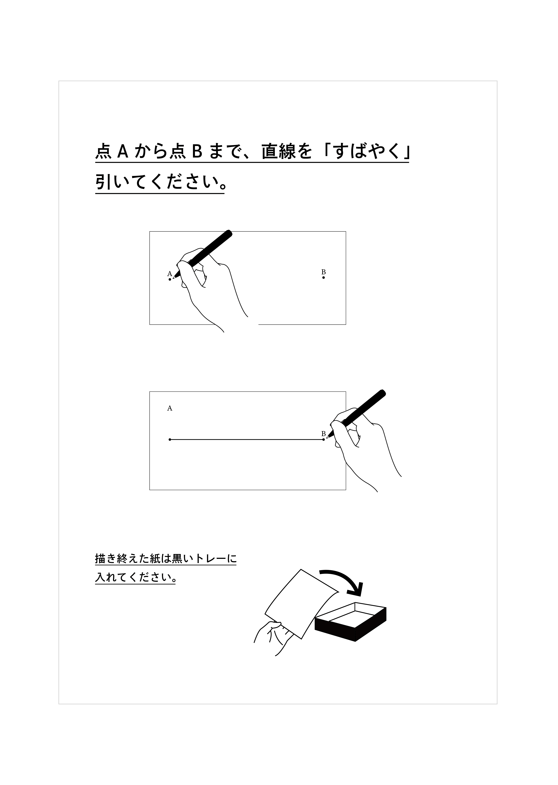
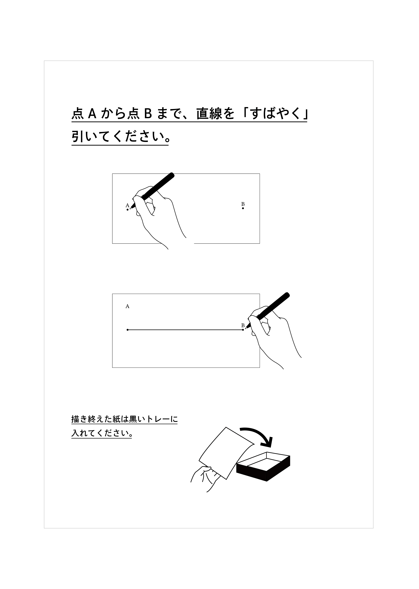
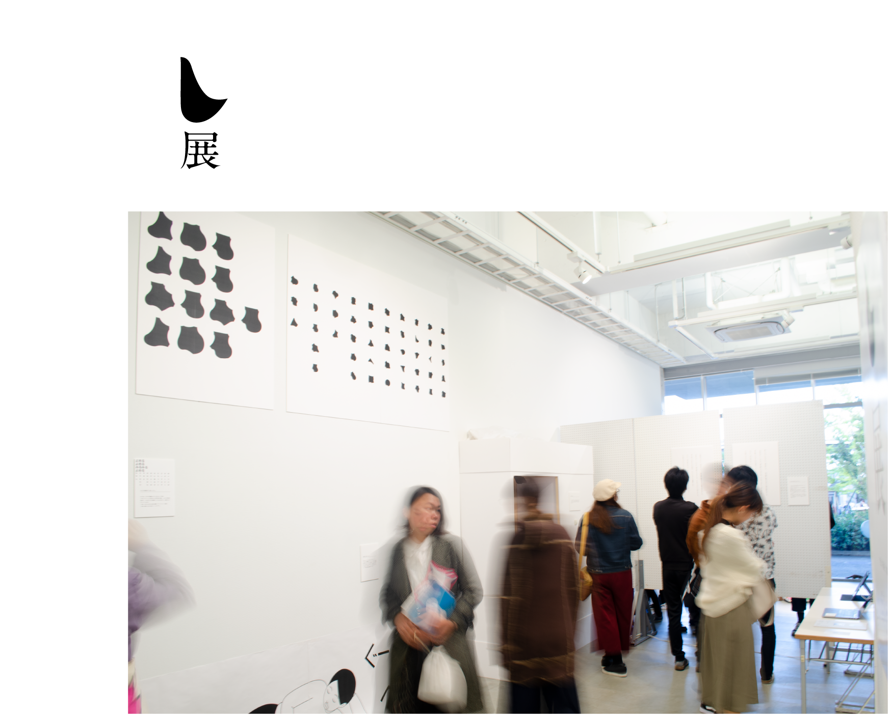

し展
2019.11 展示/インスタレーション
誘導サインの意味を 逆手にとった仕掛けづくり
文字としても記号としてもどちらとも解釈できるようなサインを展示内に配置し、場所によって鑑賞者がそのサインから受け取る意味が変わってくるという体験を提案しました。


 


グループ展示「し展」を企画

この展示では、私達の周りに存在する規範やルールをテーマとして扱い、そうした固定観念を崩し「なるほど!」と思ってもらえるような展示を目指しました。